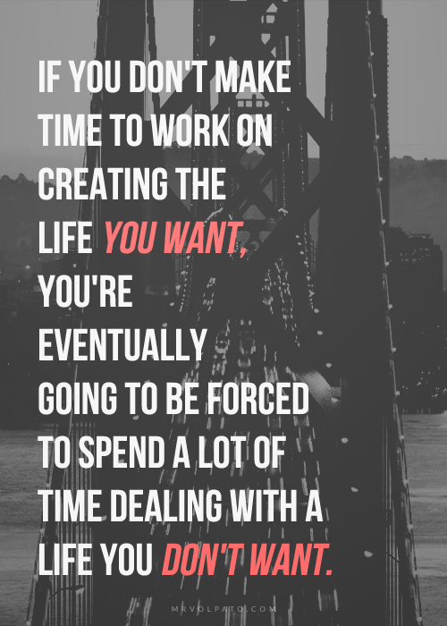

You cannot CHANGE Yesterday, but you can do something TODAY that can change tomorrow! It doesn't matter How you were BORN, that was yesterday. It doesn't matter what happened last 5years, the last 10 years. You may not be able to change that. But you can reposition yourself today. You can make new decisions today, that will change what tomorrow will bring. INVEST in your FUTURE. Refuse to be a Mental hobo! Refuse to end your Life on the side walk! I believe in your FUTURE! There's a reason I believe in your future. I believe that if you hear these words, you will act on them and they change your future None of you was Born to be POOR! You may have been poor BUT you were not Born to be poor! You may have been brought up poor, BUT you were not brought up to be POOR! Understand this The definition of ADULTHOOD is RESPONSIBILITY. When you become an adult, you take responsibility for your future. Become Responsible! What do you have in yourself? There are many who cry for help and because there are no answers to their call for help, they feel the pangs and pains of neglect. NO! Refuse to GIVE UP! Believe in what God made, GOD MADE YOU and HE NEVER MADE a FAILURE. Believe that GOD has a PURPOSE for your LIFE. You may have been born as a parental accident but you are not a DIVINE ACCIDENT. God knew you were coming and he made sufficient provisions for you! There is a place for you in the world. There are certain things You must do. There are things that are not in abundant supply, they are limited one is TIME. Save TIME! Save IT! Keep TRACK of your TIME. The Bible says for us to redeem the time for the days are evil. YOU don't have extra time. Life is not a GAME, therefore make everyday count! Improve yourself everyday! Introduce something into your Life that counts. CHOOSE to be a SUCCESS! Become inspiring! Distinguish yourself with character with excellence! If you are a Musician be a musician with a difference! Become inspiring! Whatever you do, do it with excellence. Put your best into what you do and change your World! Remember there is no Extra time. Whatever you do now, do it the Best way the FIRST TIME. Success is waiting for the man who says YES to SUCCESS! SUCCESS is waiting for the man who plans for IT, who reaches out for IT! Who says I will wake up and he wakes up, who says I will read this book and He does. Who says I will go to school and he goes. SUCCESS is waiting for the Man who makes a DECISION. Time is Important! Time is Important! Change the Position, SAY to yourself I will be WATCHED. There are those who only think of designer perfume, designer clothes, designer shoes where are your own designs? CHALLENGE yourself for the future! There's room for you! There's a place for you at the top! TRAIN your MIND and USE IT! Give yourself to a teacher. Give yourself to a TUTOR. Train yourself, train your MIND! If you train your Mind, IT will be ready to deliver to you the right thoughts and ideas that will earn you COMMERCIAL VALUE. There is No poverty for the man, who has made an INVESTMENT in his MIND and his willing to ACT! There's no hunger for the man who has trained his mind to think through every problem, to solve every problem. Train yourself, think through a problem, render solution and let men come to you for advice! Decide to Be SMART! Decide to Be a problem solver. If you make that decision, that is what you will be. Problem solvers are in short supply in the world. There's a place for a man who decides to be excellent! Distinguish yourself! It is time to PUT your Best into what you do! GET BETTER and BIGGER! Be excellent!!!! 